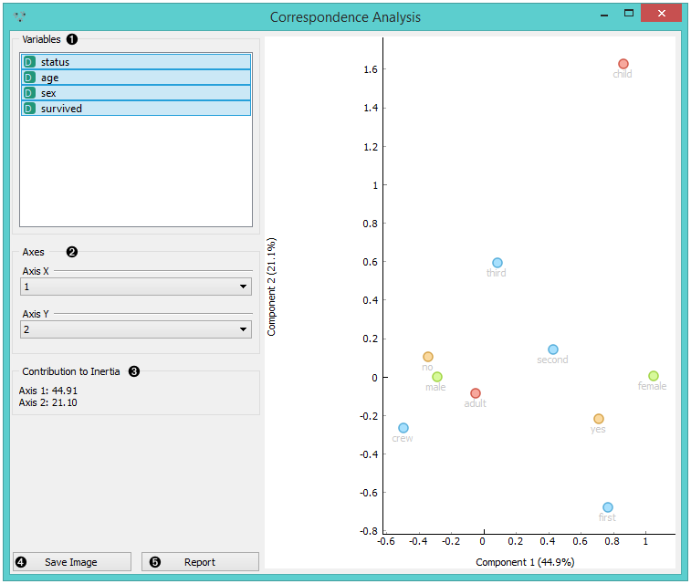
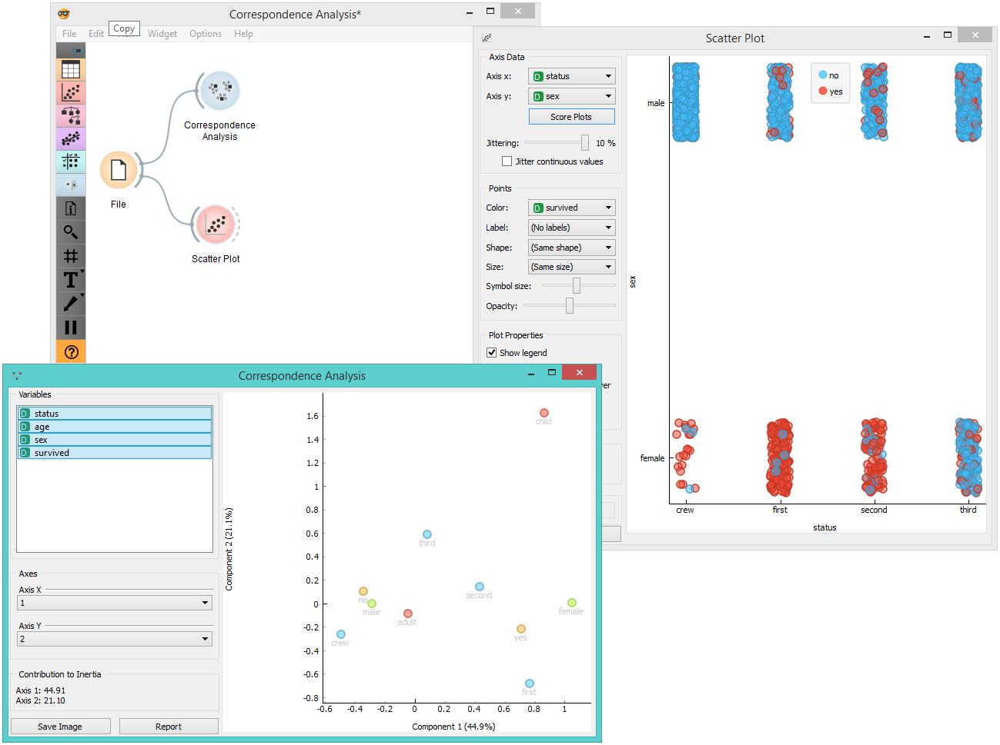

Correspondence Analysis
Correspondence analysis for categorical multivariate data.
Inputs
- Data: input dataset
Outputs
- Coordinates: coordinates of all components
Correspondence Analysis (CA) computes the CA linear transformation of the input data. While it is similar to PCA, CA computes linear transformation on discrete rather than on continuous data.

- Select the variables you want to see plotted.
- Select the component for each axis.
- Inertia values (percentage of independence from transformation, i.e. variables are in the same dimension).
- Produce a report.
Example
Below, is a simple comparison between the Correspondence Analysis and Scatter Plot widgets on the Titanic dataset. While the Scatter Plot shows fairly well which class and sex had a good survival rate and which one didn’t, Correspondence Analysis can plot several variables in a 2-D graph, thus making it easy to see the relations between variable values. It is clear from the graph that “no”, “male” and “crew” are related to each other. The same goes for “yes”, “female” and “first”.
